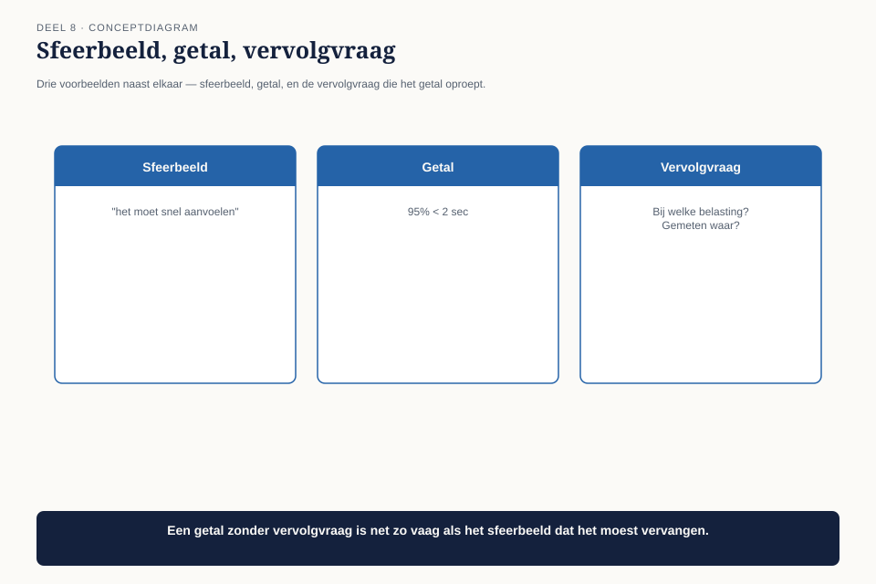

Deel 8 — Quality Attributes
Niveau 1 — De kern | Deelnemersreader BTABoK-cursus, Ductus
8.1 Waar dit deel over gaat
We betreden de laatste pijler die in dit niveau een eigen observatie sluit: Quality Attributes. Zeven competenties, waarvan de eerste — balanceren en optimaliseren — de andere zes overkoepelt en de kern van dit deel vormt.
De reden dat deze pijler laat in het niveau komt, niet vroeg, is inhoudelijk: kwaliteitsattributen zijn pas zinvol te bespreken als je weet wat het systeem moet bereiken (deel 6) en wie erover gaat (deel 4). Zonder die twee is “hoe snel moet het zijn” een vraag zonder antwoord.
Aan het eind van dit deel kun je:
- kwaliteitsattributen clusteren en per cluster een meetbaar doel formuleren in plaats van een bijvoeglijk naamwoord;
- uitleggen waarom je nooit alle kwaliteitsattributen tegelijk kunt maximaliseren, en waarom dat geen tekortkoming is;
- kwaliteitsattributen inzetten als onderhandelingsinstrument in plaats van als technische bijzaak;
- een kwaliteitsprofiel opstellen vóór de bouw begint, niet erna.
8.2 De piekbelasting
Het is eind november. Meridiaan start de jaarlijkse campagne rond de “doorbeleggen”-keuze: deelnemers die bijna met pensioen gaan, moeten beslissen of ze hun pensioenvermogen willen laten doorbeleggen of vastzetten. Claudette’s simulatievoorziening uit deel 6 en 7 is inmiddels live en wordt in de campagnemail actief aangeraden.
Binnen twee dagen loopt het aantal gelijktijdige gebruikers op tot een veelvoud van wat er ooit is getest. De simulatie, die in de testomgeving binnen twee seconden reageerde, doet er nu soms veertig seconden over. Een deel van de aanvragen loopt vast. De klantenservice krijgt telefoontjes van deelnemers die denken dat hun gegevens verloren zijn gegaan.

Niemand had ooit vastgelegd hoeveel gelijktijdige gebruikers de voorziening moest kunnen verwerken. Er was geen getal. Er was ook geen afspraak over wat er moest gebeuren als het aantal gebruikers de verwachting overschreed — geen degradatiestrategie, geen wachtrij, geen bericht aan de gebruiker dat het even duurt.
Dit is observatie O7: eisen aan beschikbaarheid, beveiliging en beheersbaarheid komen pas in de productiefase boven water — meestal als incident.
8.3 Waarom dit systematisch misgaat
Terugkijkend op deel 6: Claudette’s requirement voor de simulatie luidde “de deelnemer moet vóór een onomkeerbare keuze de gevolgen kunnen beoordelen.” Dat is een uitstekende functionele requirement. Er stond niets in over hoeveel deelnemers er tegelijk moesten kunnen inloggen, hoe snel het moest reageren, of wat er moest gebeuren bij uitval.
Dat is geen fout van deel 6 — het is een blinde vlek die vrijwel elk requirementsproces heeft. Functionele requirements beschrijven wat het systeem doet. Kwaliteitsattributen beschrijven hoe goed, hoe snel, hoe veilig, hoe beheersbaar het dat doet — en die vragen worden zelden gesteld omdat ze zich niet vanzelf aandienen. Niemand vraagt spontaan “hoe snel moet dit zijn?” tenzij iemand die vraag actief op tafel legt.
8.4 De zeven clusters
De BoK ordent kwaliteitsattributen in zeven clusters. Voor de praktijk van dit niveau werken we met vijf ervan, de meest bepalende voor een systeem zoals de simulatievoorziening.

| Cluster | Kernvraag | Bij de simulatie |
|---|---|---|
| Prestatie, betrouwbaarheid, beschikbaarheid, schaalbaarheid | hoe snel, hoe vaak beschikbaar, hoeveel gebruikers tegelijk? | responstijd, uptime, gelijktijdige gebruikers tijdens een campagne |
| Beveiliging | wie mag wat zien en doen, en hoe weet je dat zeker? | authenticatie van de deelnemer, bescherming van persoonlijke pensioengegevens |
| Beheersbaarheid, onderhoudbaarheid, ondersteunbaarheid, uitbreidbaarheid, flexibiliteit | hoe makkelijk is dit te wijzigen, te beheren, te ondersteunen? | hoe snel kan het rekenmodel worden bijgewerkt bij een wetswijziging (koppel aan deel 6) |
| Bruikbaarheid, toegankelijkheid, personalisatie | is het te gebruiken door wie het moet gebruiken? | begrijpelijk voor een deelnemer zonder financiële achtergrond |
| Verpakking, levering, na oplevering | hoe komt het live, en wat gebeurt er daarna? | hoe wordt een nieuwe versie uitgerold zonder de campagne te verstoren |
Het eerste cluster is waar de piekbelasting in deel 8.2 op vastliep, en het cluster dat het vaakst wordt vergeten omdat het pas zichtbaar wordt onder omstandigheden die zich niet dagelijks voordoen — precies zoals een jaarlijkse campagne.
8.5 Van bijvoeglijk naamwoord naar getal
De belangrijkste vaardigheid in dit deel is dezelfde beweging als de waarom-toets uit deel 6, maar dan toegepast op kwaliteit: een kwaliteitsattribuut zonder getal is geen eis maar een sfeerbeeld.
“Het systeem moet snel zijn” is een sfeerbeeld. “Negentig procent van de simulaties moet binnen twee seconden een resultaat tonen, ook bij duizend gelijktijdige gebruikers” is een eis. Het verschil is niet alleen precisie — het is toetsbaarheid. Een sfeerbeeld kan nooit falen, want niemand kan zeggen wanneer het niet meer waar is. Een getal wel.

| Sfeerbeeld | Getal | Vervolgvraag die het getal oproept |
|---|---|---|
| “Moet snel zijn” | 90% van de aanvragen binnen 2 seconden, bij 1.000 gelijktijdige gebruikers | wat gebeurt er bij de resterende 10%, en bij 1.500 gebruikers? |
| “Moet veilig zijn” | geen ongeautoriseerde toegang tot pensioengegevens, geverifieerd via jaarlijkse penetratietest | wie voert die test uit, en wat gebeurt er bij een gevonden kwetsbaarheid? |
| “Moet beschikbaar zijn” | 99,5% uptime tijdens kantooruren, gemeten per kwartaal | telt gepland onderhoud mee, en wat is het effect van de resterende 0,5%? |
De vervolgvraag is net zo belangrijk als het getal zelf. Een getal zonder de vervolgvraag te beantwoorden is een schijnprecisie — het voelt hard maar is net zo leeg als het sfeerbeeld dat het verving.
8.6 Je kunt niet alles maximaliseren
De tweede competentie in dit cluster — balancing and optimizing quality attributes — is waarschijnlijk de belangrijkste van de hele pijler, en het meest genegeerde inzicht in de praktijk: kwaliteitsattributen staan met elkaar op gespannen voet, en een ontwerp dat op elk attribuut het maximum haalt, bestaat niet.

Drie bekende spanningen, toegepast op de simulatie:
- Snelheid versus beveiliging. Elke extra verificatiestap (bijvoorbeeld tweefactorauthenticatie bij elke sessie) vertraagt de deelnemer. Meer beveiliging kost tijd, altijd.
- Flexibiliteit versus beheersbaarheid. Een systeem dat makkelijk aan te passen is aan elke nieuwe wens, is vaak lastiger te doorzien en te beheren — meer bewegende delen betekent meer plekken waar het mis kan gaan.
- Beschikbaarheid versus kosten. Elke extra negen achter de komma in uptime (99,9% naar 99,99%) kost onevenredig veel meer dan de vorige stap.
De vraag is dus nooit “wat is het beste kwaliteitsniveau” maar “welk kwaliteitsniveau past bij dit systeem, gegeven wat het moet doen.” Een systeem dat eens per jaar een campagnepiek verwerkt, heeft andere prioriteiten dan een systeem dat continu wordt gebruikt. De simulatievoorziening had, achteraf bezien, meer moeten investeren in schaalbaarheid dan in bijvoorbeeld personalisatie — een afweging die vooraf had kunnen worden gemaakt met de juiste vraag.
8.7 Kwaliteitsattributen als onderhandelingsinstrument
De derde beweging in dit deel verbindt kwaliteitsattributen met de onderhandelvaardigheid uit deel 5. Kwaliteitsattributen worden vaak gepresenteerd als technische non-discussie — “dit moet nu eenmaal zo.” Dat is een gemiste kans, want kwaliteitsattributen zijn juist bij uitstek onderhandelbaar, mits je ze in de juiste vorm op tafel legt.
Herinner de onderhandelruimte uit deel 5: kern (niet onderhandelbaar) versus vorm (wel onderhandelbaar). Bij kwaliteitsattributen ligt de kern zelden bij het exacte getal, en vaker bij het feit dat er überhaupt een getal is afgesproken.
Een kwaliteitsgesprek dat werkt, klinkt niet als een eis maar als een keuzemenu. In plaats van “het moet 99,9% beschikbaar zijn” (een eis die weerstand oproept omdat niemand de prijs kent), leg je de trade-off voor: “99,5% beschikbaarheid kost X, 99,9% kost 3X vanwege de noodzakelijke redundantie. Welke past bij hoe kritisch dit voor de campagne is?” Dat verandert het gesprek van een technisch dictaat in een besluit dat de opdrachtgever — met de waarderingslogica uit deel 3 — zelf kan wegen.
Vergelijk dit met de vier investeringstypen uit deel 3. Een hogere beschikbaarheid is meestal een beschermende investering: ze verdient zichzelf niet terug in de gewone zin, ze voorkomt een verlies. Diezelfde denkfout — alles op terugverdientijd beoordelen — duikt hier opnieuw op, nu toegepast op kwaliteitsattributen in plaats van op projecten.
8.8 Het kwaliteitsprofiel
Om dit systematisch te maken, gebruiken we een blad dat de vijf clusters combineert met de getal-toets uit 8.5 en de balanceeroefening uit 8.6.

| Cluster | Doel in dit systeem | Getal | Wat wordt hiervoor opgeofferd |
|---|---|---|---|
| Prestatie/beschikbaarheid/schaalbaarheid | |||
| Beveiliging | |||
| Beheersbaarheid/onderhoudbaarheid | |||
| Bruikbaarheid/toegankelijkheid | |||
| Verpakking/levering |
De laatste kolom is waar het instrument zijn waarde bewijst: hij dwingt je om bij elk gekozen kwaliteitsniveau te benoemen wat je ervoor inlevert. Een profiel waarin elke rij “maximaal” zegt zonder een laatste kolom, is geen profiel maar een wensenlijst — dezelfde fout als de lijst van zesendertig punten uit deel 6.
8.9 Terug naar de campagne
Claudette vult het kwaliteitsprofiel alsnog in, nu voor de herziene versie van de simulatie. Schaalbaarheid krijgt een expliciet getal: 2.000 gelijktijdige gebruikers, met een wachtrij en een geruststellend bericht boven die grens in plaats van een vastloper. Ze legt uit aan de projectmanager wat dat kost — een investering in infrastructuur die het hele jaar ongebruikt blijft, behalve tijdens de jaarlijkse campagneweek.
Dat is een beschermende investering die zich niet in de gewone zin terugverdient. Het gesprek dat ze voert, gebruikt precies het keuzemenu uit 8.7: een lager niveau kost minder maar riskeert een herhaling van de storing, met de imagoschade en het herstelwerk van dien. De directeur Uitvoering — inmiddels bekend uit deel 4 als hoog invloedrijk, hoog betrokken — kiest voor het hogere niveau, met de cijfers van de piekbelasting in de hand.
8.10 Observatie O7 gesloten
Eisen aan beschikbaarheid, beveiliging en beheersbaarheid komen pas in de productiefase boven water — meestal als incident.
Drie dingen zijn veranderd:
Kwaliteitsattributen krijgen een getal vóór de bouw, niet een sfeerbeeld dat pas in productie wordt getoetst door de werkelijkheid zelf.
De spanning tussen attributen wordt expliciet gemaakt, in plaats van stilzwijgend opgelost door wat toevallig het makkelijkst te bouwen was.
Kwaliteitsniveaus worden onderhandeld als keuze, niet opgelegd als dictaat — met de kosten en de risico’s van elk niveau zichtbaar voor wie het besluit neemt.
Met deze observatie gesloten, zijn zes van de zeven O’s behandeld. Alleen IT Environment resteert als pijler zonder eigen afgesloten observatie — deel 9 behandelt hem niet omdat er nog een open observatie is, maar omdat de pijler zelf het fundament legt voor het besluitvormingsapparaat waarmee je dit alles in een organisatie verankert. Deel 10 is de capstone waarin alle zeven observaties samenkomen.
8.11 Kernbegrippen
| Begrip | Betekenis in deze cursus |
|---|---|
| Kwaliteitsattribuutcluster | groepering van verwante kwaliteitseisen: prestatie/beschikbaarheid, beveiliging, beheersbaarheid, bruikbaarheid, levering |
| Sfeerbeeld versus getal | een kwaliteitsattribuut zonder getal is niet toetsbaar en dus geen eis |
| Balanceren | kwaliteitsattributen staan op gespannen voet; er bestaat geen ontwerp dat alles maximaliseert |
| Kwaliteitsprofiel | Ductus-werkvorm: per cluster doel, getal, en wat ervoor wordt opgeofferd |
| Kwaliteitsattribuut als onderhandelingsinstrument | een kwaliteitsniveau als keuzemenu met prijs voorleggen, niet als dictaat opleggen |
Volgende deel: deel 9 — IT Environment. Geen nieuwe observatie sluit hier, maar het fundament wordt gelegd voor hoe dit alles in een organisatie wordt verankerd: governance, assets, legacy als normale toestand.